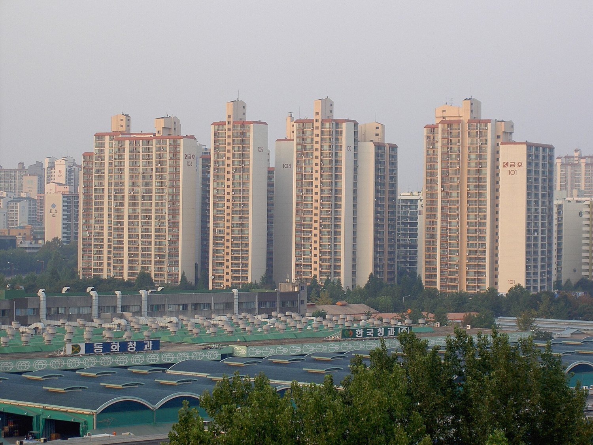

[한국경제 8대 불편한 진실②] 인구 줄어도 집값은 오른다, 도쿄와 서울이 보여 준 것
도쿄 23구 신축 맨션 1억3613만엔, 일본 인구 줄어도 사상 최고
2022~2025년 강남 3구 18% 오를 때 나머지 22개구 7% 내려(경실련 추산)
가계신용 2019조8000억원, 그중 주택관련대출이 약 60%
AI경세제민=김갑봉 기자 | 2024년 10월 추계로 일본 인구는 14년 연속 줄었다. 그런데 도쿄 23구 신축 맨션 평균 가격은 2025년 1억3613만엔으로 사상 최고다. 1년 전보다 21.8% 오른 값이다.
서울도 사람 수만으로 집값이 움직이지 않는다. 경실련 추산으로 2022년 5월부터 2025년 4월까지 강남 3구 아파트값은 약 18% 올랐고, 나머지 22개 자치구는 약 7% 내렸다.
집값을 가르는 것은 총인구보다 가구 구조와 수요의 쏠림, 빚의 흐름이다. 일본 총무성과 후생노동성, 한국은행, OECD 통계로 그 구조를 짚는다.

도쿄, 인구는 줄었는데 맨션값은 사상 최고
일본 총인구는 2024년 10월 1일 1억2380만2000명이었다. 총무성 인구추계로 한 해 동안 55만명(0.44%)이 줄어 14년 연속 감소다.
2026년 9월 29일 발표한 2025년 국세조사 확정치는 1억2297만2528명이다. 2020년보다 317만명(2.5%) 줄어 5년 동안 한 해 평균 약 63만명이 빠진 셈이다.
집값은 반대로 갔다. 도쿄 23구 신축 맨션 평균 가격은 2023년 1억1483만엔으로 처음 1억엔을 넘었고, 1년 새 39.4% 올랐다.
2024년에 소폭 내렸다가 2025년 1억3613만엔으로 다시 최고를 쓰며 3년 연속 1억엔을 넘었다. 도심 6구 평균은 1억9503만엔에 이른다.
사람은 줄어도 가구는 쪼개진다
후생노동성 국민생활기초조사에서 일본 평균 가구원 수는 1953년 5.00명이었다. 2025년에는 2.17명으로 한 집에 사는 사람이 절반 아래로 줄었다.
혼자 사는 가구가 가장 많다. 2025년 단독세대는 1947만7000세대로 전체의 35.4%다. 사람이 줄어도 집이 필요한 단위는 쉽게 줄지 않는다.
수요는 일자리와 생활 기반이 몰린 도심으로 쏠린다. 지방 인구가 줄어도 도심 맨션값은 오를 수 있으니 총인구만 보고 집값을 점치기는 어렵다.
서울, 강남 3구와 나머지 22개구의 엇갈림
경실련은 2025년 4월 28일 KB시세로 서울 아파트 30평 시세를 추산해 내놨다. 2022년 5월부터 2025년 4월까지 강남 3구는 26억2000만원에서 30억9000만원으로 약 18% 올랐다.
나머지 22개 자치구는 11억6000만원에서 10억7000만원으로 약 7% 내렸다. 두 지역 격차는 14억6000만원(2.3배)에서 20억1000만원(2.9배)으로 벌어졌다.
규제 지도도 오갔다. 서울시는 2025년 2월 13일 잠실·삼성·대치·청담 4개 동의 토지거래허가구역을 풀었는데, 대상 아파트 305곳 중 291곳이다.
3월 24일에는 강남·서초·송파·용산 전체 아파트를 다시 묶었다. 풀고 묶는 일이 한 달여 만에 되풀이되면서 시장은 신호를 엇갈리게 읽었다.
월급으로 닿기 어려운 거리
고용노동부 사업체노동력조사에서 2026년 7월 상용근로자 임금은 463만3000원이다. 1년 전보다 3.4% 올랐다. 임금 상승은 해마다 몇 % 안팎에 머문다.
경실련은 2025년 4월 노동자가 강남 3구 30평 아파트를 사려면 74년이 걸린다고 추산했다. 통계청 평균임금을 한 푼도 쓰지 않고 모은다는 가정이다.
소득 대비 집값 비율(PIR)로 보면 거리가 더 분명하다. KB국민은행 아파트담보대출 PIR에서 서울은 2026년 1분기 10.2배다. 가장 높았던 2022년 2분기에는 14.8배였다.
정점보다는 낮아졌지만 한 해 소득을 10년 넘게 모아야 서울 아파트 한 채 값에 닿는다는 뜻이다.
빚은 집으로 흐르고, 공공임대는 얇다
한국은행 집계로 2026년 2분기 말 가계신용은 2019조8000억원으로 처음 2000조원을 넘었다. 이 가운데 가계대출이 1891조3000억원이다.
주택담보대출에 전세대출을 더한 주택관련대출은 1190조8000억원이다. 가계대출의 약 63%, 가계신용의 약 59%로 가계 빚 열에 여섯이 집과 묶여 있다.
전세 보증 사고도 비용을 남겼다. 주택도시보증공사(HUG)가 세입자 대신 갚은 대위변제액은 2024년 3조9948억원이었고, 2025년에는 1조7935억원으로 55.1% 줄었다.
OECD 주거 데이터베이스(2025년 11월 갱신)에서 회원국 평균 사회임대주택 비중은 약 7%다. 한국은 2~10% 구간에 들고 네덜란드·오스트리아·덴마크는 20%를 넘는다.
일본과 서울의 숫자는 같은 방향을 가리킨다. 인구가 줄어도 가구가 쪼개지고 수요가 한곳에 몰리면 집값은 오르고, 빚이 집으로 흐르면 그 힘은 더 세진다.
집값 문제를 인구 감소가 알아서 풀어 주지는 않는다. 가계 빚이 어디로 가는지, 공공임대가 얼마나 두꺼운지를 숫자로 따지는 일이 먼저다.
참고문헌
기관 자료
- 일본 총무성 통계국, 「人口推計(2024年10月1日現在)」, 2025년 4월. https://www.stat.go.jp/data/jinsui/2024np/index.htm
- 일본 경제산업성, 「ひとことコメント: 首都圏マンション価格」, 2024년 12월 12일. https://www.meti.go.jp/statistics/toppage/report/minikaisetsu/hitokoto_kako/20241212hitokoto.html
- 일본 후생노동성, 「2025年 国民生活基礎調査の概況」, 2026년. https://www.mhlw.go.jp/toukei/saikin/hw/k-tyosa/k-tyosa25/dl/14.pdf
- OECD, 「PH4.2 Social rental housing stock」(Affordable Housing Database), 2025년 11월 24일 갱신. https://webfs.oecd.org/Els-com/Affordable_Housing_Database/PH4-2-Social-rental-housing-stock.pdf
- 지표누리, 「임금 상승률」(고용노동부 사업체노동력조사). https://www.index.go.kr/unify/idx-info.do?idxCd=1485
- KB국민은행 KB씽크, 「KB 아파트담보대출 PIR」, 2026년 6월 15일. https://kbthink.com/realestate/basics/blog/260615.html
- KB국민은행 KB씽크, 「토지거래허가구역 정리」, 2025년 4월. https://kbthink.com/main/asset-management/wealth-manage-tip/kbthink-original/202504/land-transaction-permission-areas.html
언론 보도
- "2025년 국세조사 일본 인구 1억2297만명", 구마모토니치니치신문, 2026년 9월 29일. https://kumanichi.com/articles/2040839
- "도쿄 23구 신축 맨션 평균 가격", nippon.com. https://www.nippon.com/ja/japan-data/h02685/
- "경실련 강남 3구 아파트 시세 분석", 주간경향, 2025년 4월 28일. https://weekly.khan.co.kr/article/202504281422001
- "경실련 서울 아파트 시세 분석", 프레시안, 2025년 4월 28일. https://pressian.com/pages/articles/2025042813281980039
- "가계신용 2000조원 돌파", SBS Biz, 2026년 8월 19일. https://biz.sbs.co.kr/amp/article/20000329425
- "2분기 가계신용", 노컷뉴스, 2026년 8월 19일. https://nocutnews.co.kr/news/6564700
- "HUG 대위변제액 10년 만에 첫 감소", 세계일보, 2026년 1월 17일. https://www.segye.com/newsView/20260117503110
- "HUG 대위변제액", SBS Biz. https://biz.sbs.co.kr/amp/article/20000285592
- "토지거래허가구역 재지정", SBS Biz, 2025년 3월. https://biz.sbs.co.kr/amp/article/20000217581
[사진 출처]
- [사진1] Stegano, 「Seoul garak APT.jpg」, 2006년 10월 4일, 위키미디어 공용, 퍼블릭 도메인. https://commons.wikimedia.org/wiki/File:Seoul_garak_APT.jpg
※ 이 기사는 AI 프로그램 클로드를 활용해 작성했습니다.
관련기사
- [한국경제 8대 불편한 진실①] 임대차 열 건 중 일곱이 월세, 전세 끝물의 세입자
- [한국경제 8대 불편한 진실③] 공무원연금 수급자 69만명, 적자는 일반회계가 메운다
- [한국경제 8대 불편한 진실④] 국민연금 소득대체율 43%, 평균 노령연금은 70만6150원
- [한국경제 8대 불편한 진실⑤] 자영업자 빚 1095조원, 혼자 일하는 사장이 늘었다
저작권자 © AI경세제민 무단전재 및 재배포, AI학습 및 활용 금지